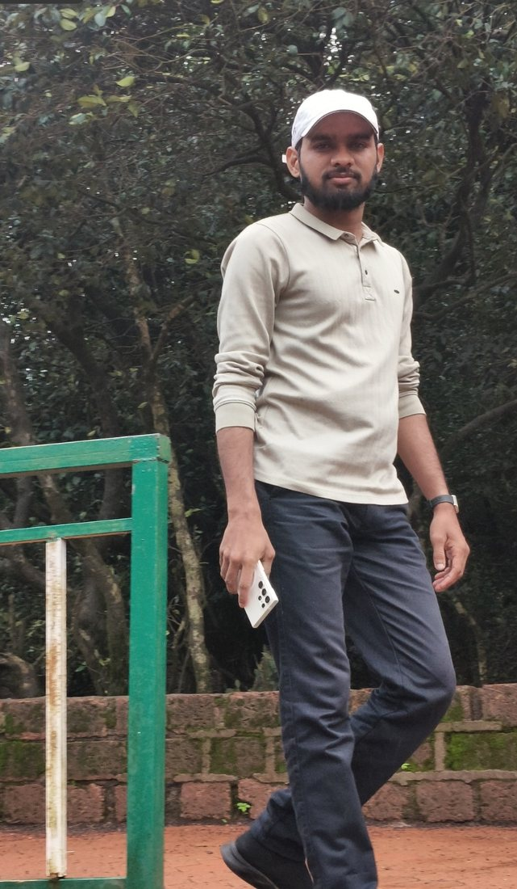
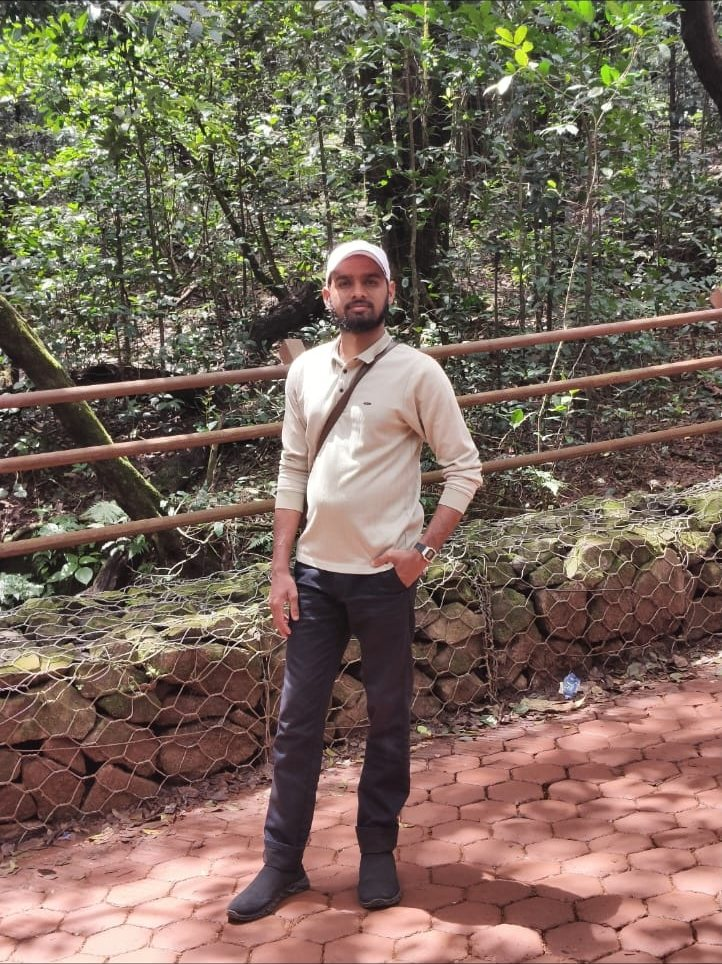
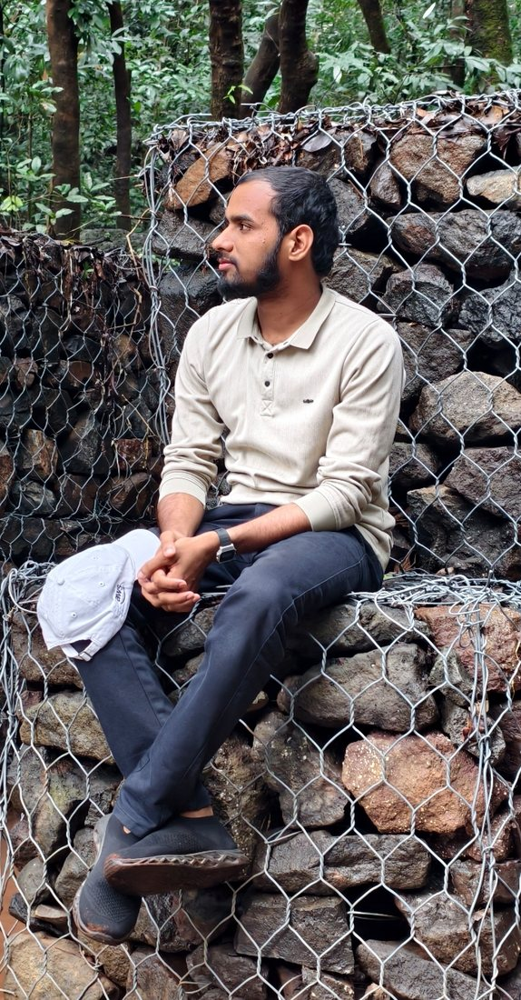
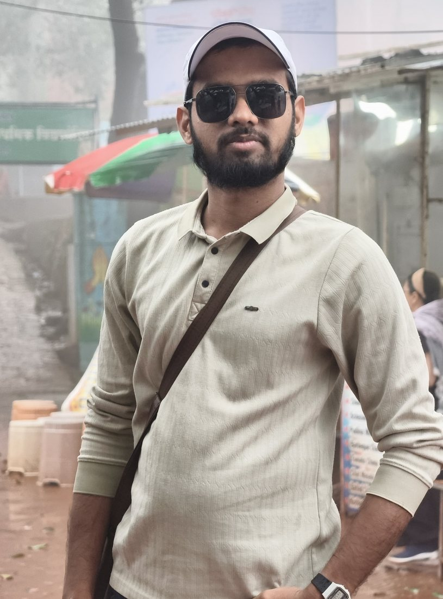

Date of Birth
07 February 2000
بِسْمِ اللَّهِ الرَّحْمَٰنِ الرَّحِيمِ
Software Engineer · Databases
Born 07 February 2000
Date of Birth
07 February 2000
Height
5′ 7″
Blood Group
O+
Bachelor of Engineering (B.E. – Mechanical)
Dr. Babasaheb Ambedkar Marathwada University, Aurangabad
Work From Home — Udgir
TCS, Mumbai


Shaikh Mohammad Saleem
Retired Field Manager, Huma Hatcheries, Udgir
Currently owns a retail chicken business
Shaikh Gausiya Saleem
Homemaker
Late Shaikh Mohammad Hussain
Origin: Wahad, Tq. Kandhar – 431742
Shaikh Abdul Razzaque
Origin: Hippalgaon, Tq. Ahmadpur – 413531
Sumaiyya Imran
Married
D.El.Ed · Pursuing B.A.
Shaikh Sana
Unmarried
D.El.Ed · Pursuing B.A.
Mohammad Sajid
Unmarried
Pursuing B.Com · Preparing for CMA
Mohammad Sadiq
Unmarried
NEET Aspirant

